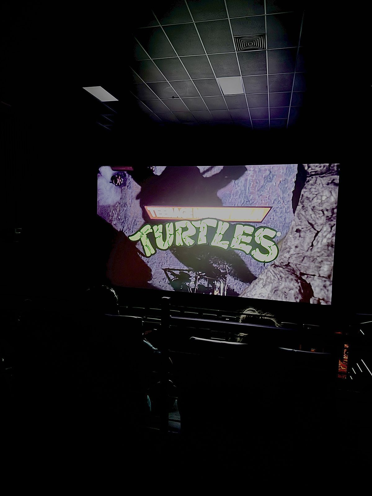
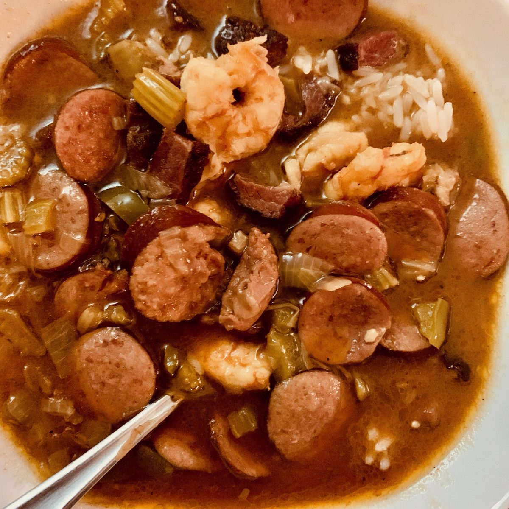

Hobbies / Visual Arts
A few of the creative outlets that shape Melvin’s perspective—each one feeding back into the way he sees and captures moments.

Photography/Videography
This picture summarizes Melvin’s first passion. He took this picture himself, adjusting the lighting and then editing it. We can see the creative process even in a simple picture like this one. " I enjoy the client's reaction when they look at the photos. The creation part is what I prefer. The process of making everything come together gives me happiness. As a photographer, there’s a lot of competition, so sometimes it’s hard to stand out. I learned that the quality of your work doesn’t always attract clients. But having a unique style allows me to become more noticeable to potential clients. That way, when I’m approached, it’s for that specific look."

Movie Watching
The will to watch any movie, even if critics do not recognize it. "Growing up, my dad and I used to rent movies based solely on the cover, and we watched them. Over time, I took an interest in film regardless of reviews or trailers. I enjoy all types of movies".

Making Good Meals
Cooking his comfort food. Full of memories and emotions. "It is deeply embedded in the culture I was raised in. New Orleans. My family was constantly cooking; every gathering was centered around food. So I found comfort in recreating those meals".